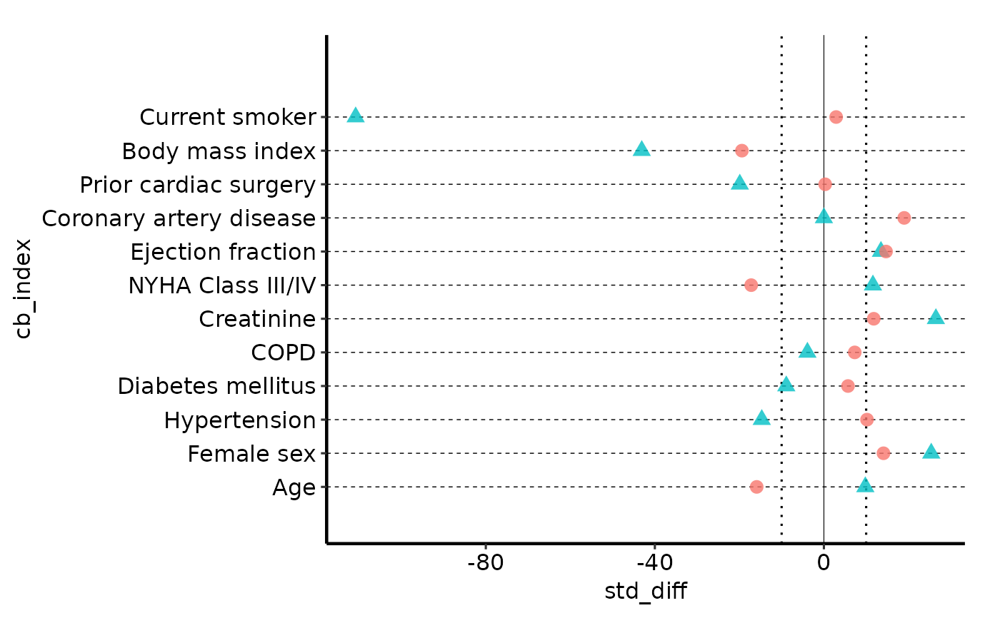
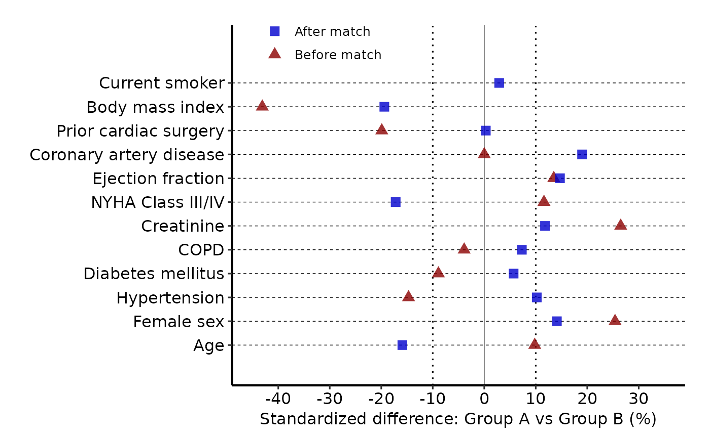
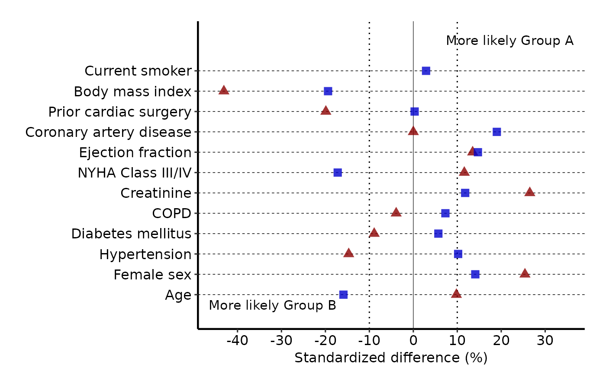

Draws the classic HVI covariate balance figure used to assess propensity score matching or IPTW quality. Each covariate appears as a labelled row; points display the standardized mean difference for each group (e.g. before and after matching). A solid reference line marks zero; dotted reference lines mark a user-supplied imbalance threshold (default +/-10\
Usage
covariate_balance(
data,
variable_col = "variable",
group_col = "group",
std_diff_col = "std_diff",
var_levels = NULL,
threshold = 10,
point_size = 3,
alpha = 0.8,
hline_linetype = "dashed",
hline_linewidth = 0.25,
vline_linewidth = 0.2,
threshold_linetype = "dotted"
)Arguments
- data
A data frame in long format with one row per covariate x group combination. Wide-format data (one column per group) must be reshaped before passing, e.g. with
tidyr::pivot_longer()orstats::reshape().- variable_col
Name of the column containing covariate labels. Default
"variable".- group_col
Name of the column identifying the comparison group (e.g.
"Before match"/"After match"). Default"group".- std_diff_col
Name of the numeric column holding the standardized mean difference values. Default
"std_diff".- var_levels
Character vector controlling the display order of covariates on the y-axis. The first element appears at the bottom. Defaults to the order of first appearance in
data[[variable_col]].- threshold
Numeric value (absolute) for the dotted imbalance reference lines drawn at
+/-threshold. Default10.- point_size
Passed to
ggplot2::geom_point(). Default3.- alpha
Transparency of the point glyphs, in [0, 1]. Default
0.8.- hline_linetype
Linetype for the horizontal covariate guide lines. Default
"dashed".- hline_linewidth
Linewidth for the horizontal guide lines. Default
0.25.- vline_linewidth
Linewidth for the solid zero reference line. Default
0.2.- threshold_linetype
Linetype for the +/-threshold reference lines. Default
"dotted".
Value
A bare ggplot2::ggplot() object. Layer on
ggplot2::scale_color_manual(), ggplot2::scale_shape_manual(),
ggplot2::scale_x_continuous(), ggplot2::labs(),
ggplot2::annotate(), and a theme to complete the figure.
Details
The function returns a bare ggplot object with no colour, shape, axis, or
theme applied. Callers are expected to add those with the usual +
operator, keeping the workflow flexible and consistent with the rest of
the package.
Examples
library(ggplot2)
dta <- sample_covariate_balance_data()
# Bare plot with manuscript theme
covariate_balance(dta, alpha = 0.8) +
hvtiPlotR::hvti_theme("manuscript")

# Add colour, shape, axis scales, and manuscript theme
covariate_balance(dta, alpha = 0.8) +
scale_color_manual(
values = c("Before match" = "red4", "After match" = "blue3"),
name = NULL
) +
scale_shape_manual(
values = c("Before match" = 17L, "After match" = 15L),
name = NULL
) +
scale_x_continuous(limits = c(-45, 35), breaks = seq(-40, 30, 10)) +
labs(
x = "Standardized difference: Group A vs Group B (%)",
y = ""
) +
hvtiPlotR::hvti_theme("manuscript") +
theme(legend.position = c(0.20, 0.95))
#> Warning: Removed 1 row containing missing values or values outside the scale range
#> (`geom_point()`).

# Add directional annotations and theme
covariate_balance(dta, alpha = 0.8) +
scale_color_manual(
values = c("Before match" = "red4", "After match" = "blue3"),
name = NULL
) +
scale_shape_manual(
values = c("Before match" = 17L, "After match" = 15L),
name = NULL
) +
scale_x_continuous(limits = c(-45, 35), breaks = seq(-40, 30, 10)) +
labs(x = "Standardized difference (%)", y = "") +
annotate("text", x = -32, y = 0.5,
label = "More likely Group B", size = 4) +
annotate("text", x = 22, y = 13.5,
label = "More likely Group A", size = 4) +
hvtiPlotR::hvti_theme("manuscript")
#> Warning: Removed 1 row containing missing values or values outside the scale range
#> (`geom_point()`).
